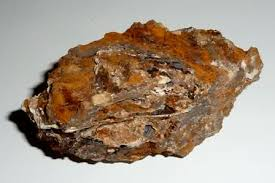
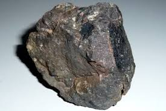
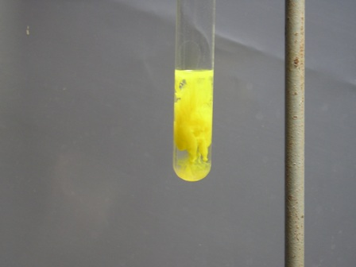
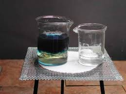

A Montevecchio ero riuscito fortunosamente a reperire, come si ricorderà, due "sassi" interessanti, gli unici fortemente mineralizzati che ero riuscito a trovare razzolando in una discarica difficilmente accessibile.
E' arrivata l'ora di "buttare nell'acido" (...fare un'analisi ruspante ma attendibile dei metalli contenuti) uno di questi campioni; quello più significativo è quello a destra nelle immagini qui sotto.


Devo dire che l'analisi ha completamente smentito le mie supposizioni: avevo ritenuto trattarsi di blenda... e invece di tutt'altro si tratta!
Ma andiamo a procedere.
Ho inizialmente misurato la densità del minerale, che ha fornito un valore di 3,5; il colore è molto scuro, con riflessi metallici e associazione evidente a galena, che è un minerale abbastanza inconfondibile (la foto non rende l'idea).
I tratti "somatici" del minerale, una certa esperienza, l'associazione con la galena e il sito di reperimento mi indirizzavano decisamente verso una blenda scura ma molto probabile.
Ho trattato 5 g di minerale, scegliendo la parte con meno ganga, con acido cloridrico concentrato a caldo, fino a dissoluzione quasi completa.
Il residuo insolubile era costituito da quarzo.
Il colore della soluzione, giallo carico, è stato un indice immediato dell'alto contenuto in ferro del campione.
Dopo aver tirato a secco, ottenendo un abbondante residuo giallo-marrone, ho ripreso con HCl diluito e filtrato.
Mi riproponevo di eseguire l'analisi sistematica per gruppi, mirata solo al piombo (eventuale argento), allo zinco e al cadmio, secondo l'idea iniziale della blenda.
La presenza di quintalate di ferro rendeva impossibile questo procedimento, rendendo necessario separare per quanto possibile il ferro dal resto.
Per puro scrupolo, ma senza alcuna aspettativa reale, ho trattato il residuo sul filtro con ammoniaca concentrata in modo che l'eventuale AgCl presente si solubilizzasse sotto forma di Ag(NH3)2Cl e su questo percolato limpido ho aggiunto di nuovo HCl per far riprecipitare l'AgCl: la mancanza del minimo accenno di intorbidamento ha fatto escludere la presenza di argento nel campione (in quantità "umane" si capisce; le tracce infinitesime non ci interessano).
Prima di procedere a separare il ferro per cercare lo zinco, ho trattato una parte della soluzione cloridrica di base, opportunamente diluita, con cromato di potassio K2CrO4, ottenendo un significativo precipitato di cromato giallo di piombo PbCrO4, indice della presenza di questo metallo.

Precipitazione del cromato di piombo
Il piombo infatti, se in piccola quantità, non rimane tutto come residuo insolubile del primo gruppo analitico ma passa in soluzione anche sotto forma del poco solubile PbCl2 e viene rivelato con sicurezza dal cromato.
Successivamente ho trattato la soluzione cloridrica con NaOH fino a pH fortemente alcalino, in maniera da far precipitare tutto il ferro come idrossido e solubilizzare lo zinco come zincato Na2Zn(OH)4.
Ho lasciato decantare perfettamente (filtrare l'idrossido ferrico è quasi impossibile!) e sulla soluzione limpida portata a pH neutro ho fatto gorgogliare acido solfidrico H2S per far precipitare tutto lo zinco presente (si può sostituire vantaggiosamente questa reazione per riscaldamento con tioacetammide).
Risultato: tracce minime di precipitato, lo zinco è presente solo in quantità irrilevante.
Allora per consolazione non rimaneva altro che fare le due classiche quanto scontate prove per il ferro col tiocianato e col ferrocianuro.
Del tiocianato mi manca l'immagine mentre un becher di soluzione diluita si riempie di blù con un po' di sol. di K ferrocianuro.

Ferrocianuro ferrico (Blù di Prussia)
Non metto le formule e le reazioni perchè sono banali e scontate; ecco le due foto finali, del tiocianato ferrico e del blù di Prussia, che dichiarano a gran voce che il minerale trovato NON era blenda ma un volgare (per modo di dire) minerale di ferro contaminato, diciamo così, da una discreta quantità di galena con associata pochissima blenda.
A Montevecchio esistevano anche dei filoni a ferro (ossidi vari) e la dimostrazione è anche il colore di quel rio dai depositi limonitici che scende a est della miniera e che si vede in una foto di un post precedente.
Morale: a Montevecchio, regno incontrastato del piombo e dello zinco, sono andato a beccare proprio un filone di mineralaccio di ferro... bah, dovrò mettere in conto di ritornare in Sardegna per forza!
7 commenti